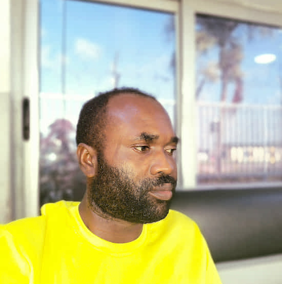

Mathew Udowa Oghenemairo
About Me
My name is Mathew Udowa Oghenemairo. I was born on May 27, 1990. This is my second attempt at learning the three core frontend web technologies — HTML, CSS, and JavaScript. My passion for software development comes from a strong desire to build products that solve real-world problems. I am currently pursuing a Bachelor of Science in Software Development with BYU-Pathway Worldwide and expect to graduate on May 16, 2027.

Lagos, Nigeria
Nigeria, officially the Federal Republic of Nigeria, is a diverse West African nation bordered by the Atlantic Ocean to the south, Niger to the north, Cameroon to the east, and Benin to the west. With a population of over 242 million, it is the most populous country in Africa and is often referred to as the "Giant of Africa". Home to roughly 250 ethnic groups, with the three largest being the Hausa-Fulani in the north, the Yoruba in the southwest, and the Igbo in the southeast.